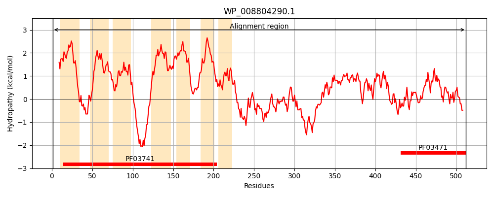
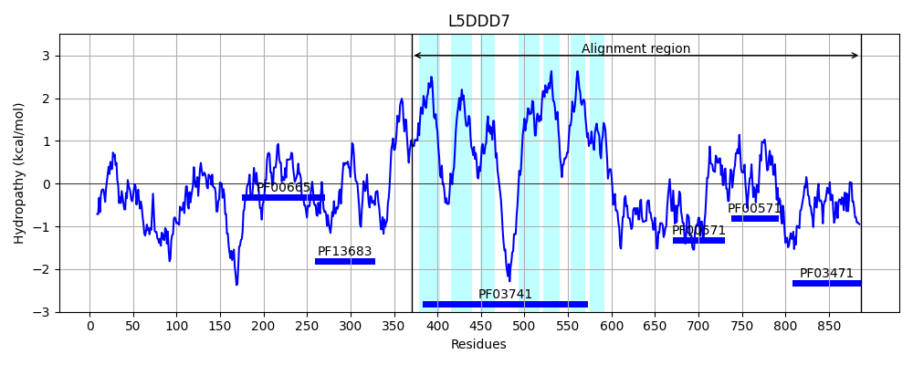
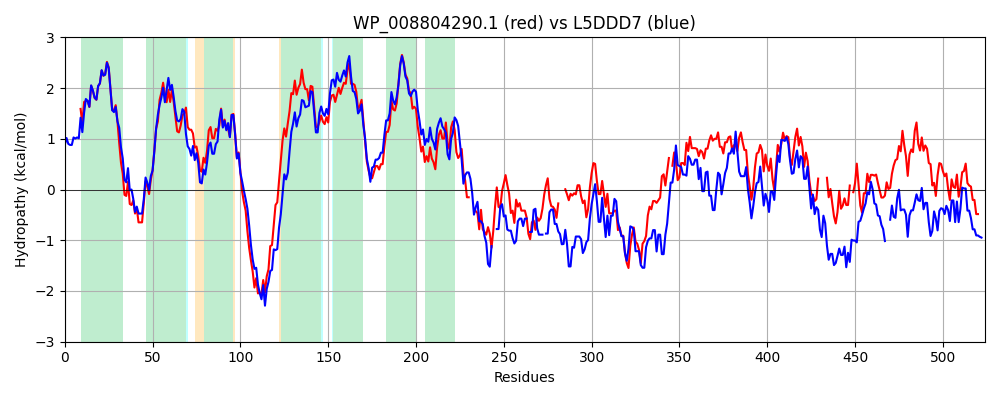

Hit Accession: L5DDD7
Hit TCID: 2.A.109.2.3
Hit Description: gnl|BL_ORD_ID|6164 gnl|TC-DB|L5DDD7|2.A.109.2.3 Membrane protein OS=Escherichia coli KTE166 GN=WKI_02229 PE=4 SV=1
Mach Len: 524
e:0.000000
Query TMS Count : 7
Hit TMS Count: 7
TMS-Overlap Score: 7.250000
Predicted Substrates:None
BLAST Alignment:
Score: 1145 , Bit scores: 445 bits, E-value: 9.4e-148, Alignment length: 524, Percentage identity: 50
Query: 1 MELLMDPSIWAGLLTLIVLEIVLGIDNLVFIAILADKLPPKQRDKARLIGLSLALVMRLGLLSVISWMVTLTKPLITIADFSFSGRDLIMLLGGIFLLFKATTELHERLENRQHDSGHGKGYASFWVVVLQIVVLDAVFSLDAVITAVGMVNHLPVMMAAVVIAMIMMLLASKPLTRFVNQHPTVVVLCLSFLLMIGLSLVAEGFGFHIPKGYLYAAIGFSIIIEFFNQVA---RRNFVRHQSTLPLRARTADAILRLMGGRKQTSVSHDADSPAAIPVPEG---AFAEEERYMINGVLTLAQRSLRGIMTPRGEISWVDAEQSDDEIRRQLLSSPHSLFPVCRG-ELDEIIGIVRAKELLVALEAGENVAALASASPAIVVPETLDPINLLGVLRRARGSFVIVTNEFGMVQGLVTPLDVLEAIAGEFP----DADETPEIVIDGDG-WLIKGSTDLHALQQALGLDALVNEDEDIATVAGLVIAVNGHIPRIGDTVSLPPLQFTVVEANDYRVDLVRAVVTR 512
ME + DPSIWAGL+TL+V+E+VLGIDNLVFIAILA+KLPP QRD+AR+ GL LA+VMRL LL+ ISW+VTLT+PL + F+FS RDLIML GG FLLFKAT EL+ERLE + ++ + A FW VV QIVVLDA+FSLD+VITA+GMV+HL VMMAAVVIA+ +ML+ASKPLT+FVN HPT+V+LCLSFLLMIG SLVAEGFGF IPKGYLYAAIGFS++IE FNQ+A RR F+ T LR RT +A++RL+ G+K+ D ++ A++ V G F +ER MI VL L QR++ IMT R +I +D +DEIR+ L + H+ V G + ++++G+V +LL GE + +V PETL + L R AR F V +EFG V+G+VT DV E IAG P + D +I + DG W G L L Q + L ++E + T+AGL++ IP+ G+ V + ++ +RV V+ + R
Sbjct: 370 MEWIADPSIWAGLVTLVVIELVLGIDNLVFIAILAEKLPPAQRDRARITGLMLAMVMRLLLLASISWLVTLTQPLFSFRSFTFSARDLIMLFGGFFLLFKATMELNERLEGKDSNNPTQRKGAKFWGVVTQIVVLDAIFSLDSVITAIGMVDHLLVMMAAVVIAISLMLMASKPLTQFVNSHPTIVILCLSFLLMIGFSLVAEGFGFVIPKGYLYAAIGFSVMIEAFNQLAIFNRRRFLSANQT--LRQRTTEAVMRLLSGQKE-DAELDTET-ASMLVDHGNQQIFNPQERRMIERVLNLNQRTVSSIMTSRHDIEHIDLNAPEDEIRQLLERNQHTRLVVTDGDDAEDLLGVVHVIDLLQQSLRGEPLNLRVLIRQPLVFPETLPLLPALEQFRNARTHFAFVVDEFGSVEGIVTLSDVTETIAGNLPNEVEEIDARHDIQKNADGSWTANGHMPLEDLVQYVPLP--LDEKREYHTIAGLLMEYLQRIPKPGEEVQVGDYLLKTLQVESHRVQKVQIIPLR 887 | Protein Hydropathy Plots: |
|---|
|  |  |
Pairwise Alignment-Hydropathy Plot:
|
|---|
|  |